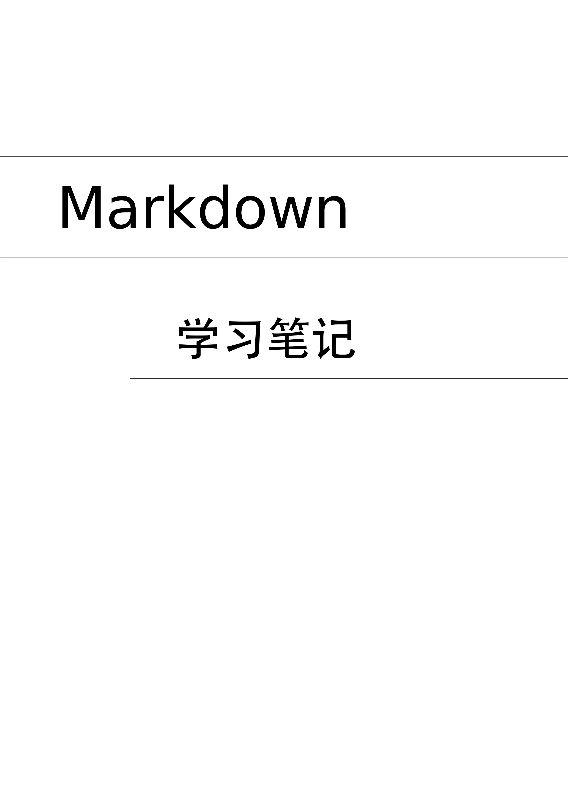

基本思路就是用最基本的LaTeX的文档配置，然后用Tikz功能强大的绘图功能将封面画出来。
也许还可以进一步精简。
% !Mode:: "TeX:UTF-8"%確保文檔utf-8編碼
\documentclass[12pt]{book}
\newlength{\textpt}
\setlength{\textpt}{12pt}
%========基本必备的宏包========%
\usepackage{calc,float,moresize}
%=========页面设置=========%
\RequirePackage[a4paper, %a4paper size 297:210 mm
bindingoffset=10mm,%裝訂線
top=35mm, %上邊距 包括頁眉
bottom=30mm,%下邊距 包括頁腳
inner=10mm+12pt, %左邊距or inner
outer=10mm, %右邊距or outer
headheight=10mm,%頁眉
headsep=15mm,%
footskip=15mm,%
marginparsep=10pt, %旁註與正文間距
marginparwidth=63pt,includemp=true% 旁註寬度計入width%旁註寬度
]{geometry}
%color
\usepackage[table,svgnames]{xcolor}
%================字體================%
%设置数学字体
\RequirePackage{amssymb,amsmath}
\RequirePackage{fontspec}
%si unit
\RequirePackage{siunitx}
\sisetup{
math-micro = \text{μ},
text-micro = μ
}
%設置英文字體
\setmainfont[Mapping=tex-text]{DejaVu Serif}
\setsansfont[Mapping=tex-text]{DejaVu Sans}
\setmonofont[Mapping=tex-text]{DejaVu Sans Mono}
%中文環境
\RequirePackage[CJKnumber=true]{xeCJK}
\xeCJKsetup{PunctStyle=plain}
\setCJKmainfont[BoldFont=Adobe 黑体 Std,ItalicFont=Adobe 楷体 Std]
{Adobe 宋体 Std}%影響rmfamily字體
\setCJKsansfont{Adobe 黑体 Std}%影響sffamily字體
\setCJKmonofont{Adobe 楷体 Std}%影響ttfamily字體
\RequirePackage{xltxtra}
%=============新的字符===========%
\newfontfamily{\libertine}[Scale=1.3]{Linux Libertine O}
\newfontfamily{\ubuntu}[Scale=3]{Ubuntu}
\usepackage{newunicodechar}
\newunicodechar{Ⓐ}{{\libertine{Ⓐ}}}
\newunicodechar{Ⓑ}{{\libertine{Ⓑ}}}
\newunicodechar{Ⓒ}{{\libertine{Ⓒ}}}
\newunicodechar{Ⓓ}{{\libertine{Ⓓ}}}
\newunicodechar{①}{{\libertine{①}}}
\newunicodechar{②}{{\libertine{②}}}
\newunicodechar{③}{{\libertine{③}}}
\newunicodechar{④}{{\libertine{④}}}
\newunicodechar{⑤}{{\libertine{⑤}}}
\newunicodechar{}{{\ubuntu{}}}
%%===============中文化=========%
\renewcommand\contentsname{目~录}
\renewcommand\listfigurename{插图目录}
\renewcommand\listtablename{表格目录}
\renewcommand\indexname{索~引}
\renewcommand\figurename{图}
\renewcommand\tablename{表}
\renewcommand\partname{部分}
\renewcommand\appendixname{附录}
\renewcommand{\today}{\number\year 年\number\month 月\number\day 日}
%====tikz设置
\usepackage{tikz}
\usetikzlibrary{intersections,calc,positioning,shapes}
\usepgflibrary{shapes.symbols}
\usepackage{pgfplots}
\begin{document}
%some title command for convenience
\def\title{Markdown}
\def\subtitle{学习笔记}
\def\backimg{封面.pdf}
%清空页眉页脚
\thispagestyle{empty}
% draw image
\begin{tikzpicture}[remember picture,overlay]
\node[inner sep=0] at (current page.center)
{\includegraphics[width=\paperwidth,height=\paperheight]{\backimg}};
\end{tikzpicture}
%some text
\begin{tikzpicture}[remember picture,overlay]
\node[draw,minimum width=0.5\paperwidth,minimum height=2*2.2em,scale=2,align=flush left,text width=0.4\paperwidth, fill=green!50!black,text=white]
(title)
[above =0.18\paperheight of current page.center]
{\Huge\sffamily \title };
\node[draw,minimum width=0.5\paperwidth,minimum height=2*2.2em,scale=1.6,align=flush left,text width=0.4\paperwidth , tape,fill=blue!50!black,text=white,xshift=4em]
(subtitle)
[below =0.05\paperheight of title]
{\Huge\sffamily \subtitle};
\end{tikzpicture}
\end{document}
在保留必须的字体设置和页面设置下，其他LaTeX的宏包大多都没有加载，这已经足够我们设计封面使用了。
然后加入好Tikz宏包和一些常用的子宏包。
然后我们开始绘制封面，首先是清除页眉页脚，然后是插入背景图片。
这里我就简单的用inkscape做了一个（没有任何修改，根据默认的A4页面）空白的背景。在现在还没有任何意义，不过封面就是由背景图片和文字两部分组成，你仔细观察别人设计的封面，不管多么豪华绚烂夺目都是如此。而对于那些漂亮的背景图片，最好还是用专门的编辑图片的软件来处理，比如inkscapegimp等。
然后后面就是插入文字的工作。
插入文字的工作不管这些文字是横着的还是竖着的还是顺着线走的，Tikz都有很好的解决方案，这里就最简单的横向文字做出说明。
横向的设计思路是将一行行文字的node看作一个个盒子，就和LaTeX的文档布局思路一样，然后加入各个node并做一些优化即可。

然后我们进一步做一些优化，比如scale放大啊，x，y位置的调整啊，还有node的外围形状啊，还有填充颜色啊，字体颜色等等。
初次尝试的例子，（要编译两次）之后就是这个效果。
这里就是加了Tikz的shape宏包里面的tape彩带效果，熟悉tikz的都知道，tikz里面的宏包功能是很丰富多彩的，而这点，虽然tex编程语法晦涩，很多其他编程语言都能最大限度的操控图形驱动等等，但我觉得tikz里面的图形宏包真的太强大的，都是前人实践的总结。